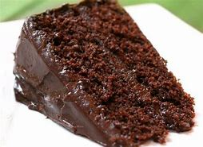

Receita de Bolo de Chocolate.
Ingredientes
- 2 Xicaras de Farinha de Trigo
- 1 Xicara de açucar
- 1 xicara de chocolate em po
- 1 xicara de leite
- 1/2 xicara de oleo
- 3 ovos
- 1 colher de sopa de fermento em po
Modo de Preparo
- Preaqueça o forno a 180ºC.
- Em uma tigela, misture a farinha, o açucar e chocolate em po
- Adicione o leite, o oleo e os ovos, e misture bem.
- Acrescente o fermento e mexa delicadamente.
- Despeje a massa em uma forma untada e enfarinhada.
- Leve ao forno por aproximadamente 40 minutos.
- Retire do forno, deixe esfriar e se sirva.
